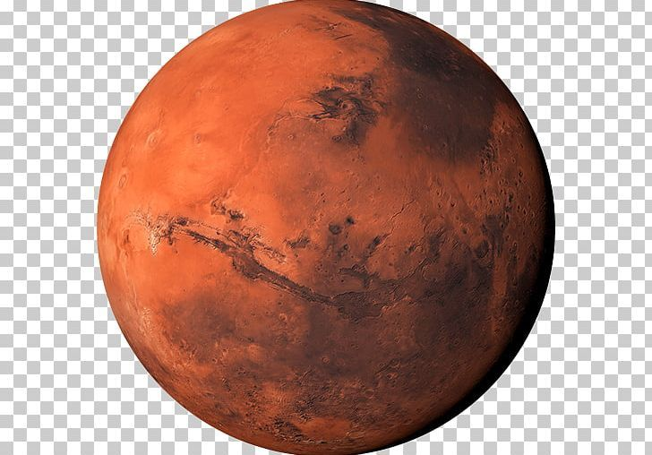

Marte
Marte es conocido como el planeta rojo debido al óxido de hierro en su superficie. Tiene volcanes gigantes como el Monte Olimpo y evidencia de agua en el pasado.
Datos importantes
- Distancia al Sol: 228 millones de km
- Duración del año: 687 días
- Tiene dos lunas: Fobos y Deimos
- Es uno de los planetas más estudiados por posibles señales de vida